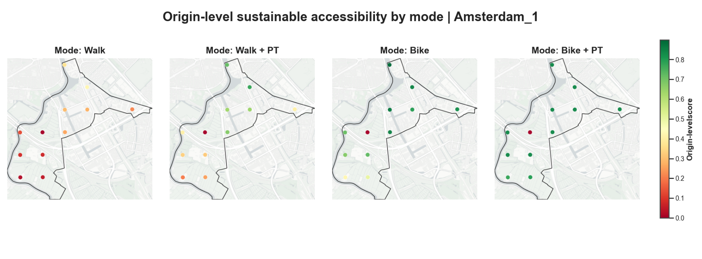
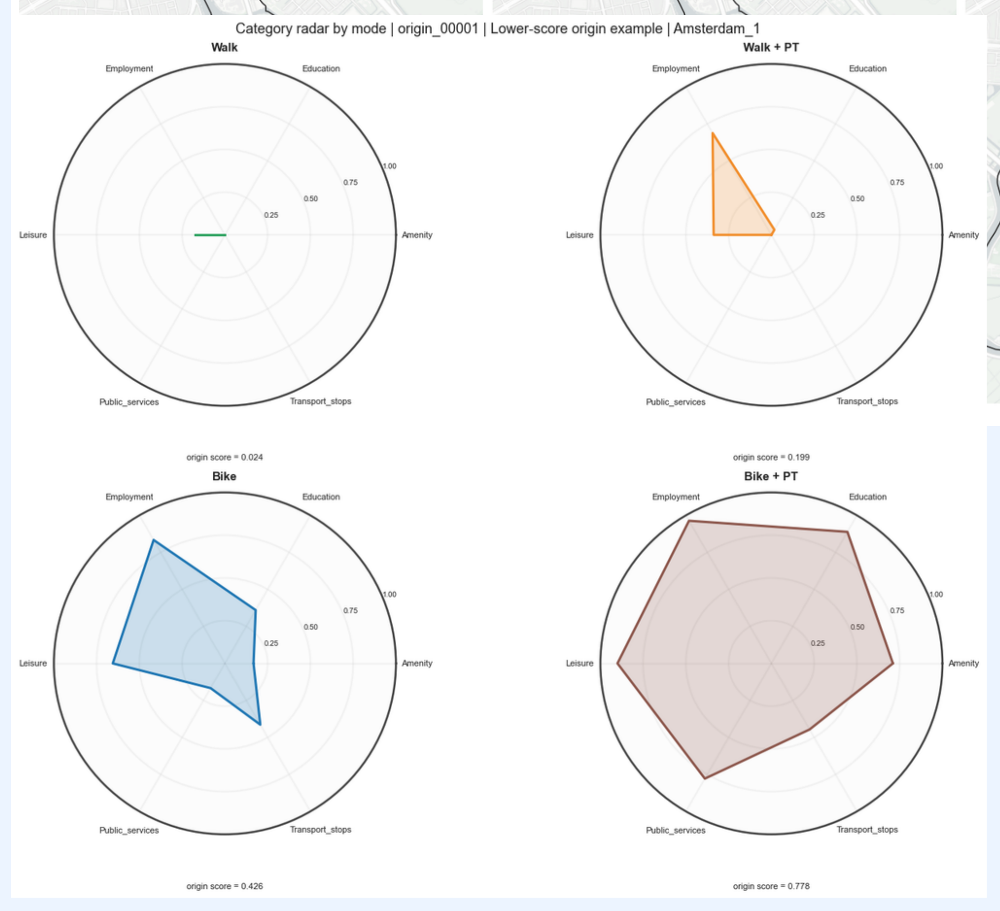
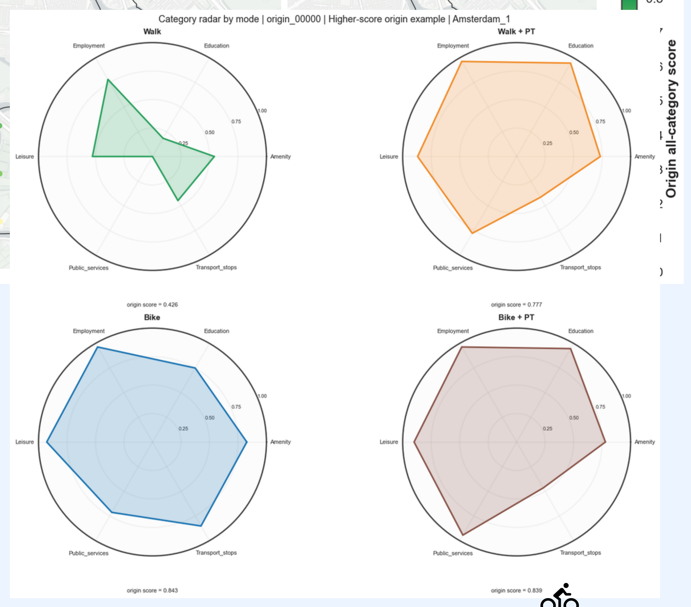
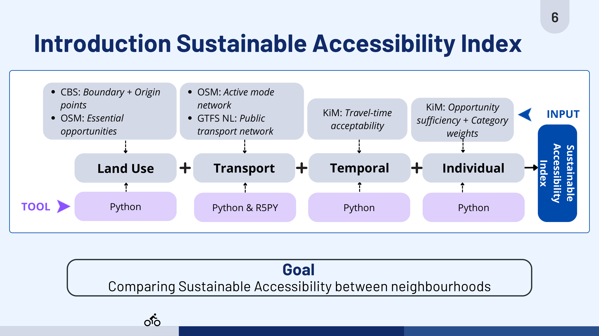

Measuring Sustainable Accessibility at the Neighbourhood Scale
A GIS-based multimodal index for access to daily opportunities
For my master thesis, I developed and tested a Sustainable Accessibility Index (SAI) to measure how easily people can reach essential daily opportunities without using a private car. The method compares neighbourhoods across the Netherlands using walking, cycling, and multimodal combinations with public transport.
The index combines travel-time acceptability, the number and sufficiency of reachable opportunities, sustainable transport modes, and multiple destination categories. Rather than producing only a ranking, the decomposable GIS-based method makes accessibility differences explainable: it can show whether a gap is related to travel time, local opportunity provision, transport mode, or spatial variation within a neighbourhood.
Project Deliverables
Accessibility at the origin level


Approach
I designed the Sustainable Accessibility Index as a transparent and decomposable workflow rather than a single black-box score. The analysis begins with neighbourhood boundaries and population-based origin points from CBS, daily opportunities and active-transport networks from OpenStreetMap, and public-transport networks from GTFS data.
Python was used to prepare the spatial inputs, calculate travel times with R5 through r5py, apply travel-time acceptability and opportunity-sufficiency parameters, and combine the results into scores for each origin, mode, opportunity category, and neighbourhood. This structure makes the final result traceable back to the data and assumptions behind it.

Key findings
- More urbanised neighbourhoods generally provide higher sustainable accessibility, but urbanisation alone does not explain the differences.
- Walking and cycling combined with public transport can extend access beyond the immediate neighbourhood.
- Cycling can outperform multimodal travel in highly and moderately urbanised neighbourhoods.
- Neighbourhood averages can hide substantial differences between origins within the same neighbourhood.
- The SAI is most useful as a diagnostic planning tool: its layers indicate whether a gap comes from travel time, opportunity provision, transport mode, or spatial inequality.